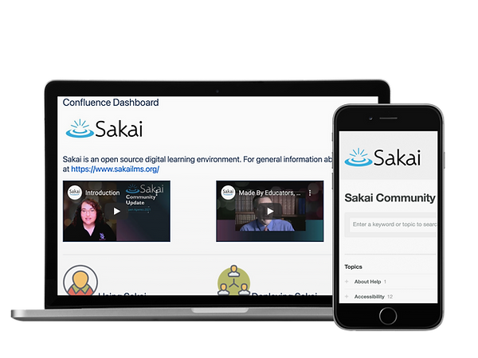
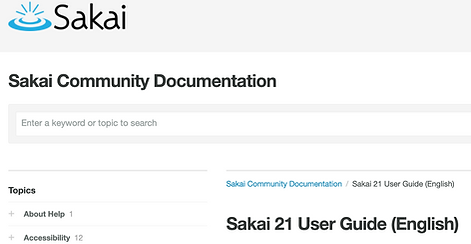
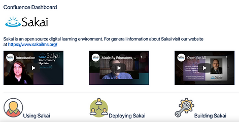

Sakai Resources
Sakai provides an array of resources, including a community wiki and user guides, as well as videos to help you create the most effective learning environments.
TRY SAKAI NOW
Resources

Need help with Sakai? Find answers in our Sakai User Guides
Sakai Community Documentation provides answers to your most pressing questions about using Sakai. Find step by step help on using all of Sakai's features and elements.
Sakai Community Documentation
Engage with the Sakai community and find answers.
The Sakai Confluence Wiki encourages you to connect with community members, participate and contribute to the project, and find information, such as where Sakai is headed as a platform, or best practices for deploying Sakai.
Sakai Confluence Wiki